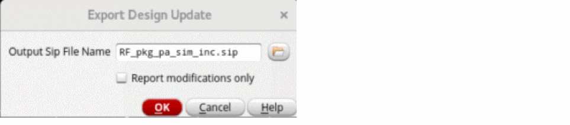

Virtuoso Layout to SiP with Assisted Export
Assisted export ensures smooth interoperability and reduces the risk of losing data when exporting a SiP file. In addition, it allows to review the modifications made in a Virtuoso layout since the latest import. The changes are reported through Annotation Browser, which can be reviewed.
The assisted export flow can be used if you have created a Virtuoso package layout by using by using the Virtuoso Multi Technology Enablement form, assisted import, or by selecting the Generate Instances as in Schematic option in the Import From Allegro form.
To export a SiP file from a Virtuoso Layout using the assisted export:
-
Click Module – Assisted Flow – Export Design Update.
The Export Design Update Form opens.
 - Specify the name of the SiP file that will be created from a Virtuoso package layout.
- Click Report modifications only to only list the design updates.
- Click OK.
- Review the changes in the Annotation Browser, if necessary. If unsupported differences are reported, it is highly recommended to check them because these updates will not be included in the generated SiP file.
Related Topics
Updating a Virtuoso Layout From a SiP File
Return to top